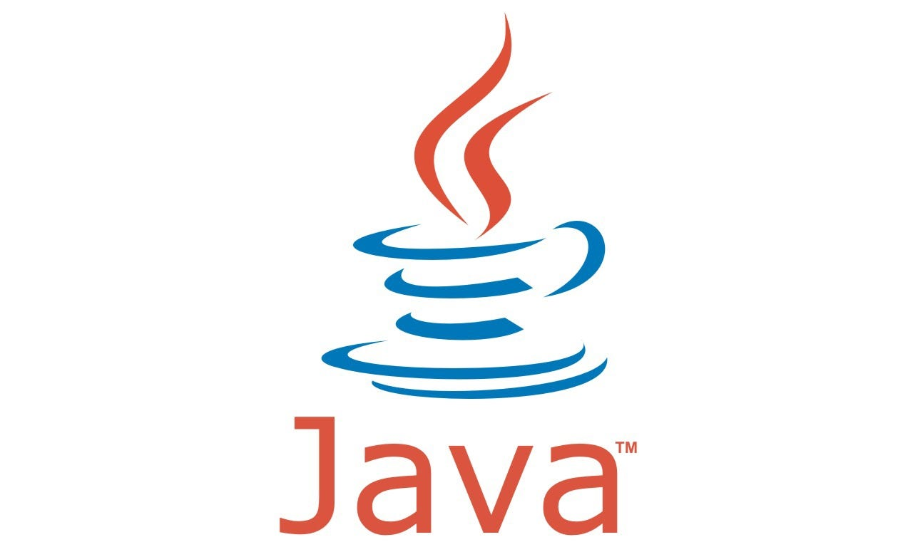

Hola soy Dilanz un configurador y modder de forge trabajo en varios estudios como cherry, owleaf, nebula y ag club me gusta mucho trabajar en mi proyecto water games junto con biukipd y vengo a contar un poco de mi historia primero empeze en esta comunidad con eventos como hoyo y leaf games solo que solo entraba debes en cuando despues volvi cuando salio party games me gusto mucho jugar sus betatests despues de eso empeze mi evento primero aprendi configuracion despues de eso se me ocurrio aprender un poco sobre el modding de forge que me gusto mucho y con eso pude mejorar mucho la calidad de mi evento.
Lenguajes de progracion
Plugins que utilizo para configurar
Conditional Events
Server Variables

Placeholder API